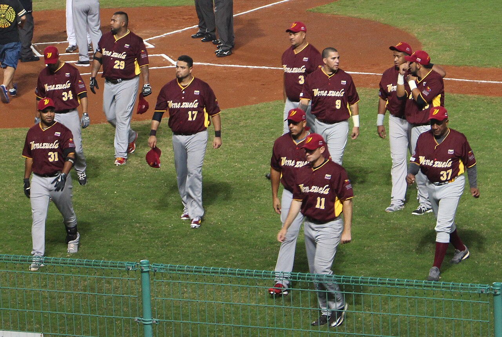
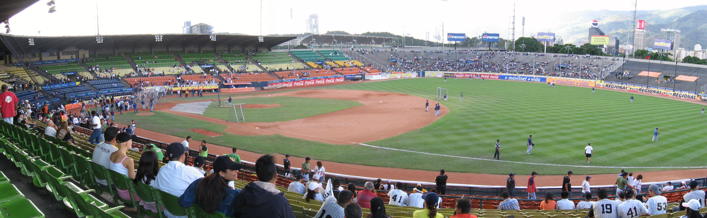
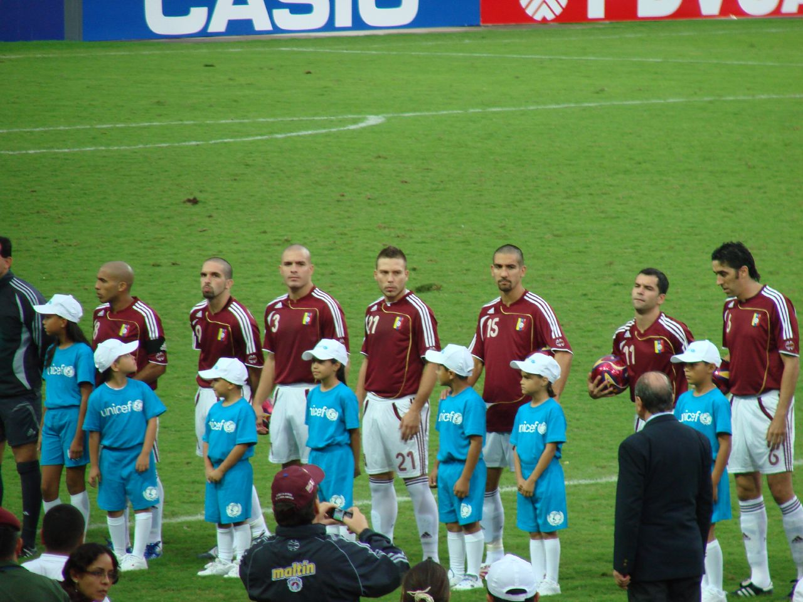
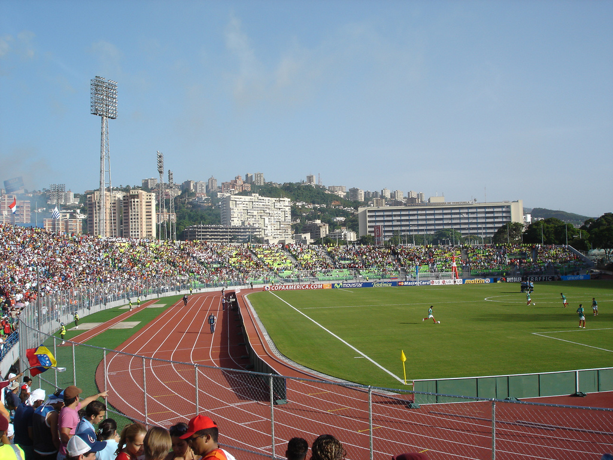
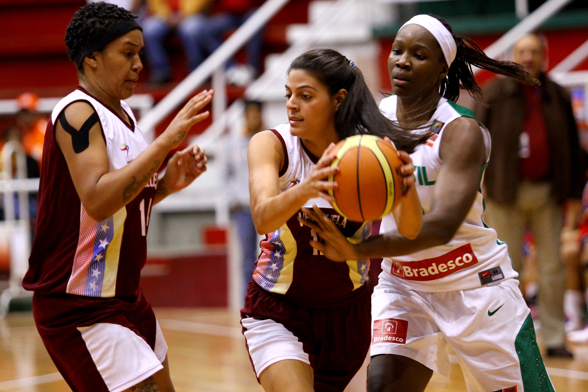
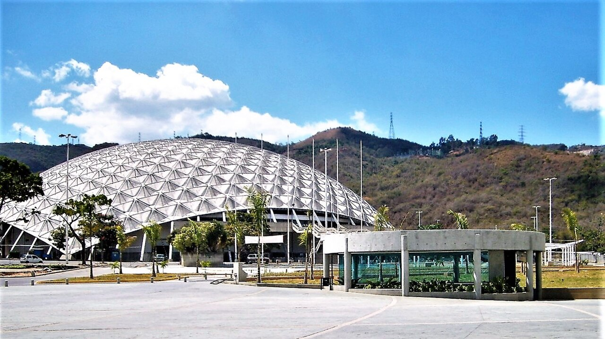
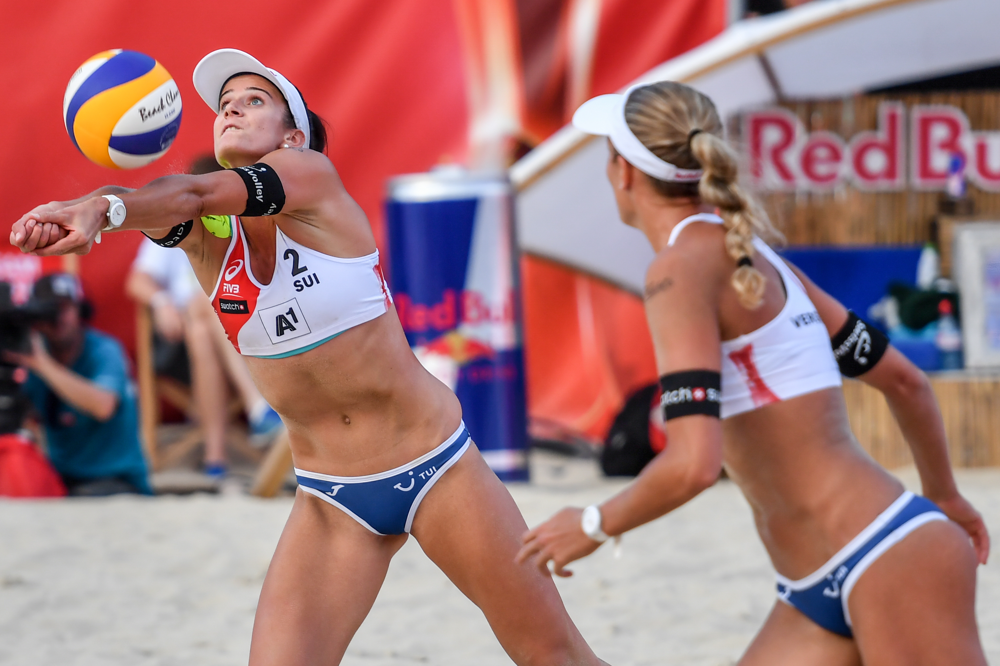
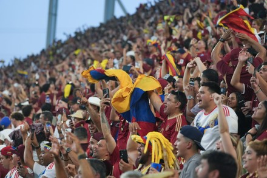

VENEZUELA'S SPORTS LEAGUES
Venezuela's professional sports leagues are the beating heart of the nation's sporting culture, drawing passionate crowds, producing world-class athletes, and delivering unforgettable moments of athletic excellence season after season. From the crack of the bat in a packed baseball stadium to the thunder of boots on a football pitch, Venezuelan league sports represent the very soul of a nation that lives and breathes competition.
The trophies lifted in Venezuela's leagues represent decades of dedication, passion, and national pride. These competitions have launched countless careers onto the world stage and remain the most celebrated sporting events in the country's calendar, uniting fans from every corner of Venezuela under one shared passion.
LVBP — LIGA VENEZOLANA DE BÉISBOL PROFESIONAL

The Liga Venezolana de Béisbol Profesional (LVBP), founded in 1945, is Venezuela's most beloved sports institution and the undisputed number one sport in the country. It has produced over 350 Major League Baseball players including legends like Miguel Cabrera, Johan Santana, and Ronald Acuña Jr. Teams like Leones del Caracas and Navegantes del Magallanes carry fan bases that span generations, with rivalries so intense they define family loyalties. Attending an LVBP game is one of the most electrifying cultural experiences Venezuela offers.

The iconic Estadio Universitario de Caracas — home of Leones del Caracas — is the cathedral of Venezuelan baseball, seating over 25,000 roaring fans under the Caracas night sky. Also worth visiting are Estadio José Bernardo Pérez in Valencia, home of Navegantes del Magallanes, and Estadio Luis Aparicio El Grande in Maracaibo. These stadiums are not just sports venues — they are living monuments to Venezuela's greatest passion.
SUPERLIGA — PRIMERA DIVISIÓN DE FÚTBOL

Football has grown enormously in Venezuela, now firmly established as the country's second most popular sport. The national team La Vinotinto has captured the hearts of the nation, competing fiercely in Copa América and World Cup qualifying. The U-20 team's run to the FIFA U-20 World Cup final in 2017 was one of the greatest moments in Venezuelan sporting history. The Primera División features storied clubs like Caracas FC and Deportivo Táchira competing for national glory each season.

The Estadio Olímpico de la Universidad Central de Venezuela in Caracas is the country's premier football venue and the home of La Vinotinto's biggest matches. With a capacity of over 35,000, it has witnessed some of the most dramatic moments in Venezuelan football history. Estadio Pueblo Nuevo in San Cristóbal — home of Deportivo Táchira — is another must-visit venue, renowned for its passionate atmosphere in the Andean city that lives and breathes football.
SPB — SUPERLIGA PROFESIONAL DE BALONCESTO

The Superliga Profesional de Baloncesto (SPB) is Venezuela's premier basketball league, founded in 1974 and featuring 14 elite clubs from across the country. Basketball is Venezuela's third most popular sport, with a national team ranked in the FIBA World top 30. The SPB has produced NBA-calibre talents including Greivis Vásquez, and the national team's 2015 FIBA Americas Championship victory remains one of the proudest moments in Venezuelan basketball history.

The Poliedro de Caracas is Venezuela's most iconic indoor sports arena and the traditional home of major basketball events, capable of hosting over 16,000 spectators for championship fixtures. For a truly local basketball experience, the Gimnasio Polideportivo in Cumaná — heartland of Marinos de Oriente — offers an intimate, electric atmosphere that showcases the raw passion of Venezuelan basketball at its most authentic.
SUPER LIGA DE VOLEIBOL

Volleyball has a proud and deeply rooted history in Venezuela — the Venezuelan Volleyball Federation was founded in 1937, making it one of the oldest sporting federations in the country. The Super Liga de Voleibol is the top domestic competition, while both the men's and women's national teams have qualified for the Olympic Games and consistently competed at the highest levels in FIBA and Pan American competitions.
Major volleyball competitions in Venezuela are held at venues including the Coliseo Puerta de Caracas. For beach volleyball, the courts along the shores of Margarita Island and Morrocoy are where the sport comes alive most vividly — with the Caribbean as a backdrop and the warm Venezuelan sun overhead, these coastal courts offer some of the most enjoyable volleyball experiences in all of South America.

Come to Venezuela and feel the electricity of a live league game for yourself. Whether you are seated in a roaring baseball stadium as the crowd erupts for a walk-off home run, or standing shoulder to shoulder with thousands of passionate football fans as La Vinotinto fights for glory, Venezuelan league sports offer a raw, authentic, and utterly unforgettable experience. This is sport as a way of life — and Venezuela invites you to live it.